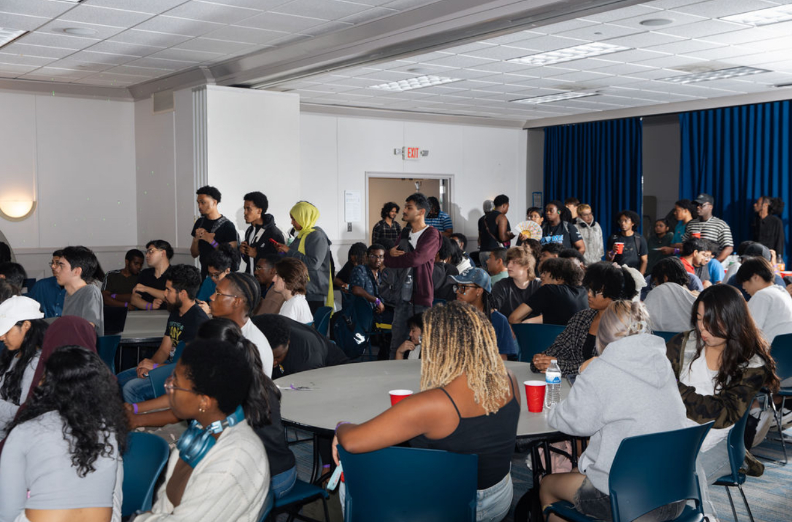

PROGSU Fall Kickoff X Rock Paper Scissors Tournament
An engaging student event designed to welcome members, encourage networking, and create a fun, interactive atmosphere through a rock paper scissors tournament with a $100 cash prize for the winners.
View image gallery
Overview
Date: September 2025
Role: Event Planning, Design & Branding, Activity Coordination, Marketing Materials
Problem
PROGSU wanted a kickoff event that increased student engagement, fostered connections among members, and created excitement for the semester. In previous years, the programming club struggled with participation and visibility. The challenge was designing an event that would feel fresh, fun, and inclusive while setting a high-energy tone for the semester and the club revamp.
Planning & Research
As we were completely revamping the Programming Club at GSU, our team had the liberty of creating an entirely new atmosphere for the club. Our goal was to design an event that was inclusive, engaging, and memorable to set a positive tone not only for the semester, but for the club in general.
- Wanted to give students the "college experience". Given that GSU is a commuter school and a lot of CS students don't have much time to let loose, we want our events to provide that for them.
- Didn't want it to be a boring presentation with 0 retention, so we needed a fun element that would make students inclined to come and stay, and hopefully meet new people.
- A tournament of some sort was the most reasonable since we were aiming for 100+ attendance and wanted everyone to have a chance to participate. Also, needed to plan out the logistics of how to realistically execute a RPS tournament with a large amount of people.
- Needed an incentive for people to show up, decided on $100 cash prize since it was universal and college students love free money.
- As for marketing, we wanted clear branding and fun visuals to attract more participants. Don't make flyers wordy and keep an emphasis on the visuals.
- Scouted out various rooms, ultimately deciding that we needed a large, open area to execute this properly. Assigned someone to handle bookiing logistics and got a team to help design the layout.
- Created budgets for food, decorations, and variable costs
- Looked into various food options that were the most cost efficient, could feed a large amount of people, and could be eaten cleanly and quickly to make time for the tournament. Decided on a local pizza shop that I was able to negotiate a deal with.
.png)
Marketing Strategy
Developed a multi-channel marketing approach to maximize event visibility and attendance:
- Word of Mouth: VP of Outreach promoted the event at every possible campus event, personally encouraging students to attend.
- Handouts & QR Codes: Small handouts included a QR code linking directly to the Luma registration page. We handed these out during our campus involvement fair, getting nearly 200 additional rsvps.
- Club Buzz: Designed and distributed unique stickers featuring the club name and motto, promoting the club’s revamp and creating a visual identity.
- Social Media: Produced Instagram reels and posts to hype the event and share updates.
- Event Recap: After the event, created a dynamic recap video capturing the energy and highlights, shared across Instagram, Discord, and LinkedIn to maximize exposure.
- Photo-op station mimicking an Instagram post interface, encouraging social sharing and boosting visibility of the club’s socials.
- Setup team for presentation and room decorations.
- Tech team for speakers and mics, casting, and music.
- Check-in team for smooth participant registration using Campus Labs Check-In
- Food team to pick up and distribute pizza efficiently.
- Photo team to capture key moments for social media.
- Tournament team to manage brackets, rules, and flow of the rock paper scissors competition.
- Checked in students, offered them a refreshment, and guided them to open seats. We had team members encourage mingling and networking while waiting for the event to start by asking icebreaker questions in small groups.
- Encouraged students to take photos with our photo-op and post on socials.
- Welcome speech by the club president and executive board members, introducing the club’s mission and upcoming events.
- Rock Paper Scissors tournament as the main engagement activity. Students who didn't want to participate were guided to the pizza table. Students who were out of the tournament after playing were also guided to the table. This scattered method ensures smooth food distribution.
- Adjusted tournament logistics on the fly: the original RPS plan involved stages and multiple wristbands, but it was too complicated to explain to the large crowd. I improvised, announcing a simpler “one-on-one matches, winners collect wristbands, most wristbands wins” system, which was easy to follow and kept the energy high.
- Announced the winners and awarded the $100 cash prize.
- Closing remarks and thank yous, encouraging students to join the club’s Discord and follow on social media for future events.
- Assigning specific responsibilities to team members helped manage the event efficiently.
- The rock paper scissors tournament created a fun, competitive atmosphere that encouraged participation and networking.
- A multi-channel approach maximized visibility and attendance, demonstrating the power of strategic promotion.
- Strengthened skills in event planning, logistics, and team coordination, especially for large, interactive events.
- Learned how adaptable planning is essential for live events. The ability to quickly pivot saved the tournament and kept participants engaged.
- Developed expertise in branding and marketing, including social media campaigns, promotional materials, and creating a cohesive, visually engaging event experience.
- Saw measurable results: high attendance, social media engagement, and positive feedback, setting a strong foundation for future PROGSU events.
Design & Materials
Visual Assets:
Execution
Managed the event with clearly defined roles for the team:
Event flow:
Reflection
This event was a chance to bring a fresh energy to the Programming Club and connect with students in meaningful ways. Planning and executing a large-scale, interactive experience taught me how to balance logistics with creativity, while the positive reception highlighted the impact of intentional design and thoughtful engagement. The success of the kickoff not only energized the semester but also strengthened the club’s presence and reputation on campus.
Key takeaways: